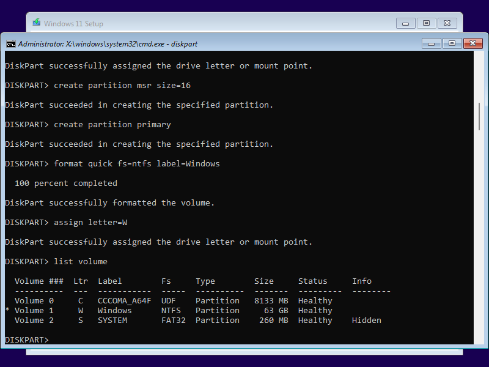

Booting Windows 11 on a Mac with Hypervisor.framework
Apple gives you two ways to run a virtual machine on Apple silicon. The easy one couldn't start current Windows 11 builds, so I used the hard one and wrote the machine myself, in Swift. This is what that machine is made of, and the three interrupt bugs that stood between Windows Setup and a finished install.
Why not Virtualization.framework?
I'm building Virtualizo, a native Mac app for virtual machines and Linux containers. Linux and macOS guests run on Virtualization.framework, which hands you a complete machine: you describe the disks and the network, and Apple supplies the rest.
Windows 11 for ARM is a different story. On Virtualization.framework, current builds stopped at a black screen for me. The guest there has no performance monitoring unit (PMU), and Windows reads PMU registers during boot whether or not the CPU says it has one. You can't add a PMU to a machine you don't control.
The layer below is Hypervisor.framework. It gives you much less:
- a VM, and a way to map your own memory into it;
- virtual CPUs that you run on threads you create;
- since macOS 15, an interrupt controller (GICv3) inside the kernel.
That's all. There is no firmware, no disk, no screen, no keyboard and no power button. Every one of those is your code, reacting each time the guest touches an address where a device should be.
Borrow a machine instead of inventing one
Windows needs UEFI firmware, and the open-source EDK2 project has a build for virtual ARM machines, ArmVirtQemu. It expects to wake up inside QEMU's virt machine: specific devices at specific addresses, described by a device tree it finds at the start of RAM.
So the engine pretends to be that machine. The firmware is Debian's Secure Boot build of EDK2, and it runs without knowing the difference.
| Address | What lives there |
|---|---|
0x0000_0000 | Firmware code (flash, read-only) |
0x0400_0000 | UEFI variable store (flash) |
0x0800_0000 | Interrupt controller: distributor |
0x0900_0000 | Serial port, clock, fw_cfg |
0x0A00_0000 | Interrupt controller: redistributors |
0x0C00_0000 | TPM 2.0 |
0x1000_0000 | PCI device memory |
0x3F00_0000 | PCI configuration space |
0x4000_0000 | RAM, with the device tree at its base |
One address had to move. QEMU puts the redistributors right after the distributor, but Hypervisor.framework reserves 32 MB for them, which doesn't fit there. The device tree tells the firmware where they went, so nothing else cares.
Starting the first CPU is then four register writes: the program counter at the firmware's first instruction, x0 pointing at the device tree, exception level 1 with interrupts masked, and the MMU off.
The loop at the centre
Each virtual CPU is a thread that calls hv_vcpu_run and waits. The call returns when the guest does something the hardware can't finish on its own. Trimmed, the loop looks like this:
while true {
hv_vcpu_run(cpu.id)
let exit = cpu.exit.pointee
switch exit.reason {
case HV_EXIT_REASON_VTIMER_ACTIVATED:
hv_vcpu_set_vtimer_mask(cpu.id, false)
case HV_EXIT_REASON_EXCEPTION:
let esr = exit.exception.syndrome
switch (esr >> 26) & 0x3f { // exception class
case 0x24: // data abort: a device access
let size = 1 << Int((esr >> 22) & 3)
let reg = (esr >> 16) & 31
let address = exit.exception.physical_address
if esr & (1 << 6) != 0 {
mmioWrite(address, cpu.reg(reg), size: size)
} else {
cpu.setReg(reg, mmioRead(address, size: size))
}
cpu.advancePC()
case 0x16, 0x17: psci(cpu) // HVC, SMC: power management
case 0x18: readAsZero(cpu, esr) // system register not exposed
case 0x01: waitForInterrupt(cpu) // WFI: the guest is idle
default: stop(cpu)
}
default: break
}
}The data abort is the important case. When the guest reads or writes an address with no memory behind it, the CPU reports which register was involved, how wide the access was and whether it was a write. That is enough to emulate the access without decoding the instruction. If the CPU doesn't supply that information the engine stops the machine; so far neither the firmware nor Windows has needed more.
Power management arrives as PSCI calls. CPU_ON wakes the thread of another virtual CPU at the entry point the guest asked for. SYSTEM_RESET has the simplest implementation in the project: the engine tears the machine down and calls execv on itself with the same arguments. A fresh process is a fresh machine.
What Windows asks for that Linux doesn't
ACPI, not a device tree
The firmware reads the device tree, but Windows wants ACPI tables. The engine builds them in Swift, including the small bytecode programs (AML) that describe the PCI bus and its interrupt routing. It hands them to the firmware through fw_cfg, the same side channel QEMU uses, along with a script of loader commands that tells EDK2 where to place the tables and which pointers to patch.
A PMU, or at least the claim of one
This is the problem that ruled out Virtualization.framework. Windows' boot manager reads PMCR_EL0 even when the CPU's ID register says there is no PMU, and Hypervisor.framework answers that read by injecting an undefined-instruction exception into the guest. The fix is to change what the ID register says, on every virtual CPU, before it runs:
var dfr0: UInt64 = 0
hv_vcpu_get_sys_reg(vcpu, HV_SYS_REG_ID_AA64DFR0_EL1, &dfr0)
// PMUVer (bits 11:8) = 1: PMUv3
hv_vcpu_set_sys_reg(vcpu, HV_SYS_REG_ID_AA64DFR0_EL1, dfr0 & ~0xf00 | 1 << 8)Three calls, once you know which three.
A clock in local time, and flash that behaves like flash
Windows keeps the hardware clock in local time, so the emulated clock adds the Mac's UTC offset.
UEFI variables live in a flash chip, and EDK2 talks to it with real flash commands: erase a sector, program a word, read the status. The variable store is mapped read-only, so writes trap to the engine. While the chip is in command mode it is unmapped entirely, so reads trap too and return status bytes instead of data. When the machine stops, the store is saved to a file.
Devices Windows already has drivers for
A fresh Windows install has no drivers for paravirtual devices like virtio. I didn't want anyone to load drivers during Setup, so every device is one Windows supports out of the box:
| Need | Emulated device | Windows driver |
|---|---|---|
| Disk and installer ISO | NVMe 1.4 controllers on PCI | Inbox NVMe |
| Keyboard and pointer | USB keyboard and absolute tablet on an xHCI controller | Inbox USB HID |
| Power button | USB HID "System Power Down" control | Inbox USB HID |
| Network | USB CDC NCM adapter, connected to vmnet | Inbox UsbNcm |
| Screen | QEMU ramfb: a framebuffer in guest RAM | Basic display, on the firmware's framebuffer |
The power button is its own USB device because Windows ignores the Power key on a keyboard. The screen has no GPU behind it: the firmware picks a framebuffer in guest memory and tells the engine where it is, and the engine copies those pixels to the app about 30 times a second through a memory-mapped file.

Three interrupt bugs
Getting to Setup's first screen was the easy part. Getting Setup to finish copying files took three fixes, all about when an interrupt arrives.
1. The interrupt that came too early
The guest starts disk I/O by writing to a "doorbell" register. My first NVMe model did the whole command inside that write and raised the completion interrupt before returning. So the interrupt arrived before the guest's own store instruction had finished.
Real hardware can never be that fast, and Windows' storage stack assumes it isn't. Its interrupt handler declined the interrupt because the code it had interrupted still owned the queue. The interrupt line is level-triggered, so it fired again at once, forever.
The fix is to behave like hardware: raise the line 200 microseconds later. Lowering it stays immediate.
2. Disk I/O at the wrong priority
Windows rings that doorbell at DISPATCH_LEVEL, a priority where it expects to spend very little time. Doing the host's file I/O inside the doorbell exit held a virtual CPU there for as long as the read took. During large copies that was long enough for a DPC_WATCHDOG_VIOLATION blue screen.
Now the doorbell write returns immediately and the I/O runs on a separate queue, which is also what a real controller does.
3. The CPU that never woke up
An idle guest CPU executes WFI, wait for interrupt. Hypervisor.framework handles that inside the kernel and wakes the virtual CPU only for an interrupt it is able to take. Part of Windows' NVMe interrupt path waits with WFI while running at interrupt priority, where the timer can't reach it. With more than one virtual CPU it never woke, and the install stopped with the same watchdog blue screen.
The architecture allows WFI to wake for no reason. So a small thread kicks every running virtual CPU out of the guest once a millisecond:
Thread.detachNewThread {
while true {
usleep(1000)
exitVCPUs(cpus.filter { $0.on }) // hv_vcpus_exit
}
}It looks crude, and it is the difference between an install that hangs and one that finishes. A related rule: when a device raises an interrupt from another thread, the engine kicks the other virtual CPUs as well, because one blocked in WFI doesn't notice the new interrupt by itself.
Debugging a kernel you can't attach to
When Windows hangs under your own hypervisor there is no debugger to ask. What you do have is every register and all of guest memory, so I wrote a sampler. Once a second it stops each virtual CPU and works out where it is:
- Read the program counter and the guest's page-table registers.
- Walk the guest's page tables by hand to turn that virtual address into a pointer in host memory.
- Step backwards a page at a time until a page starts with
MZ: the header of the Windows image that contains the address. - Follow the image's debug directory to the name of its symbol file.
- Do the same for each return address on the stack, after stripping the pointer-authentication bits.
The result reads almost like a stack trace:
[sample] cpu0 pc in ntkrnlmp.pdb+0x28a510, lr in ntkrnlmp.pdb+0x28981c, elr in storport.pdb+0x14998
[sample] cpu1 pc in ntkrnlmp.pdb+0x47fe4c, lr in ntkrnlmp.pdb+0x47fe40, elr in ntkrnlmp.pdb+0x50b578One CPU inside storport, the storage driver, and the others idling in the kernel. Seeing storport there is what pointed me at the disk path.
Stopping is part of the job
One bug was not in the guest. If the engine's process exited while virtual CPUs were still running guest code, macOS itself panicked while cleaning up the VM. So the engine stops in order: every virtual CPU thread destroys its own CPU, then the VM is destroyed, and only then does the process exit.
What it can't do
- There is no GPU, so the screen is a plain framebuffer and its size is fixed when the machine starts.
- A running Windows machine can't be suspended or snapshotted.
- It has one disk and one network adapter.
The engine is about 8,200 lines of Swift. More than half of that is one device I haven't described: Windows 11 Setup refuses a machine without a TPM 2.0 and Secure Boot, so the engine has a TPM written from scratch. That is the next post.
Virtualizo isn't released yet. It runs Linux, macOS and Windows 11 guests and Linux containers in one native Mac app. I'll post here when it is available.